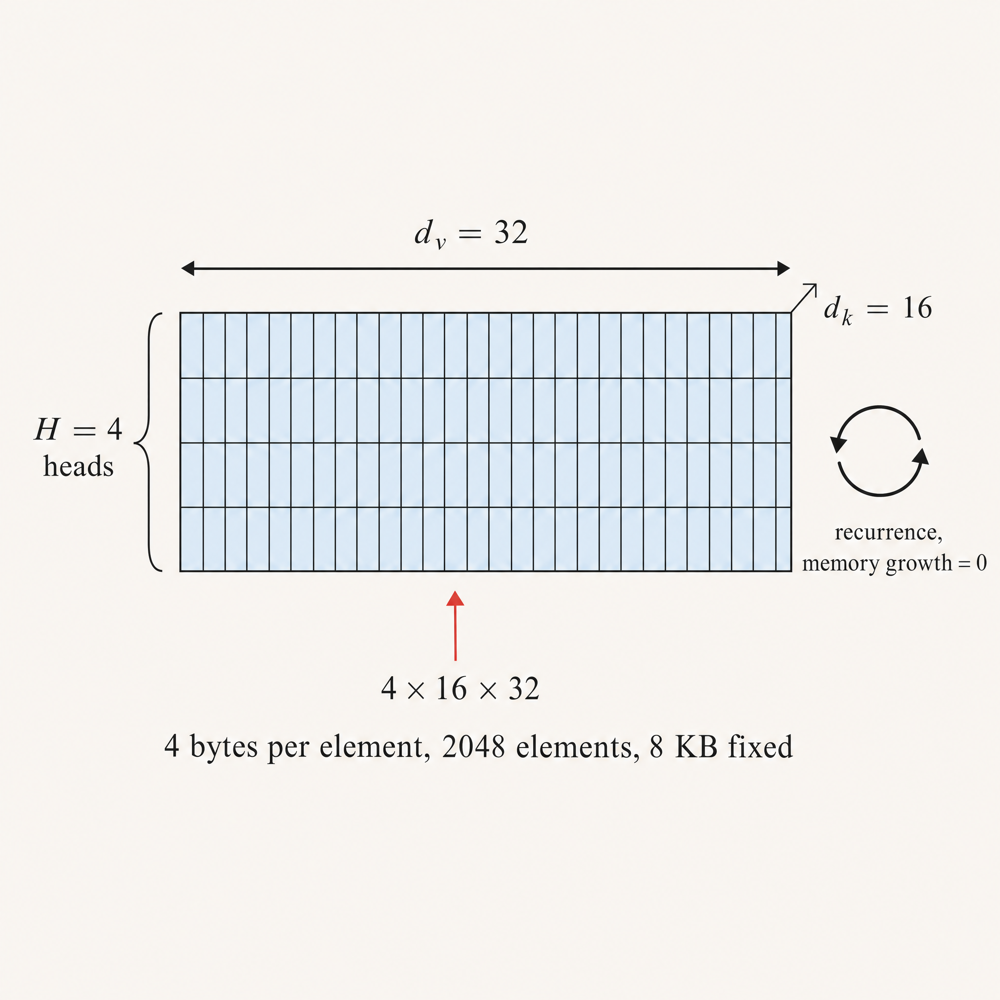
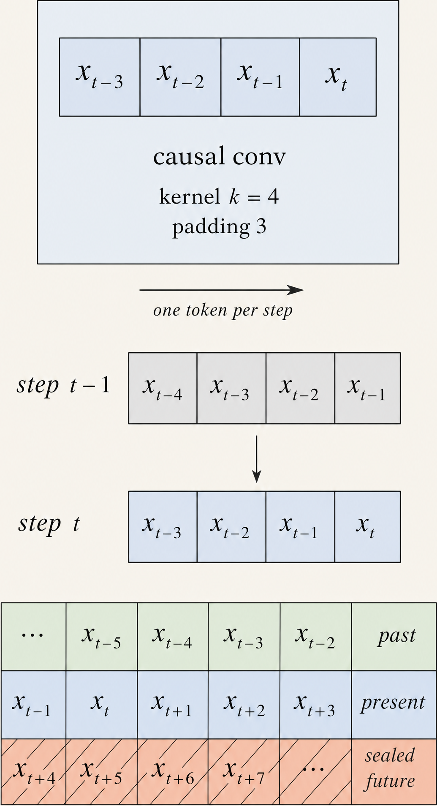
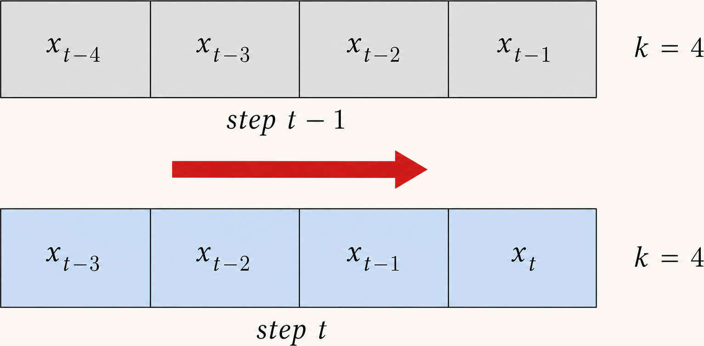
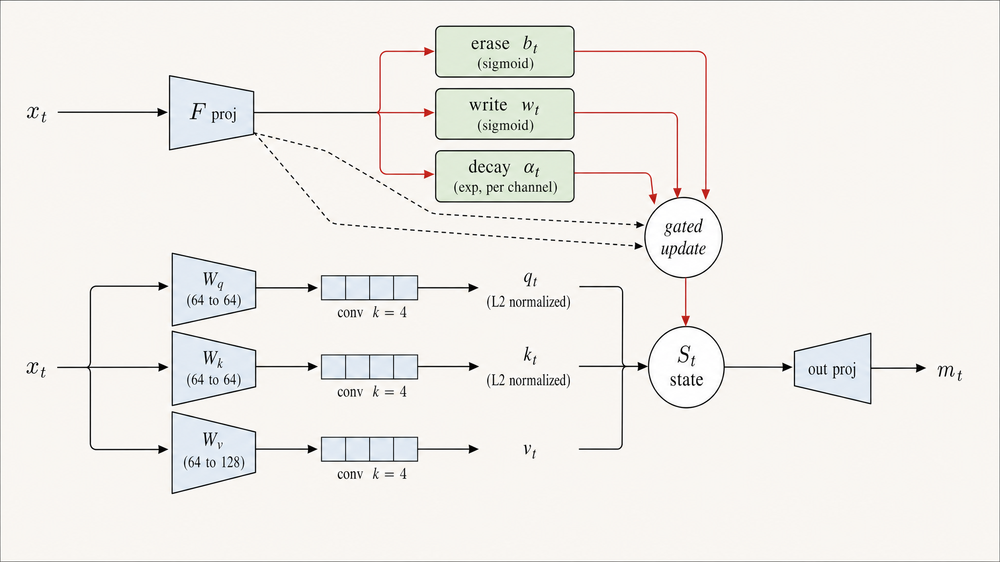
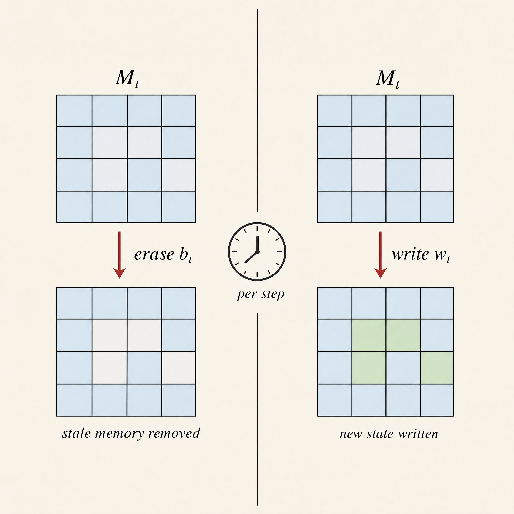

CAUSAL CONVOLUTION WINDOW

kernel k = 4
depthwise groups = d
padding k − 1

PROJECTION · GATE GENERATION · MECHANISM

erase
S ← ( I − k_t (b_t ⊙ k_t)ᵀ ) S
decay
S ← diag(α_t) S
write
S ← S + k_t (w_t ⊙ v_t)ᵀ
output
o_t = S_tᵀ q_t → Linear(128 → 64) → RMSNorm
α law
α_t = exp(g), g = −exp(Alog) · softplus(raw_g + dt_bias)
FIXED-SIZE STATE · 8 KB
